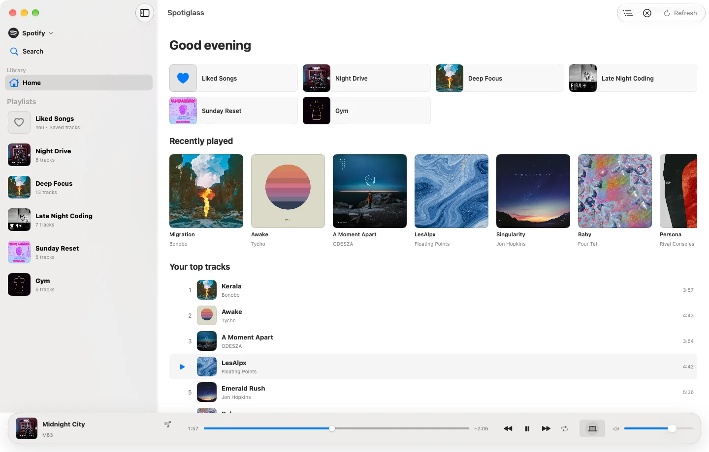
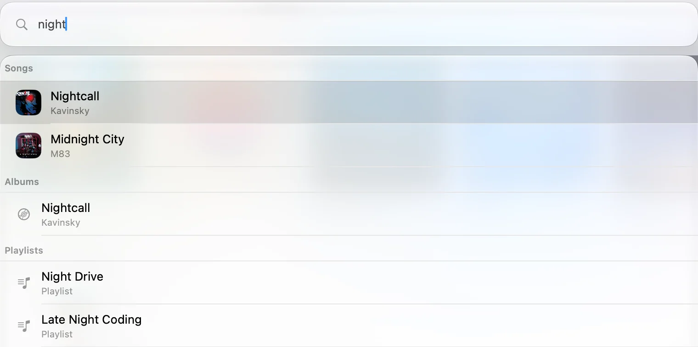
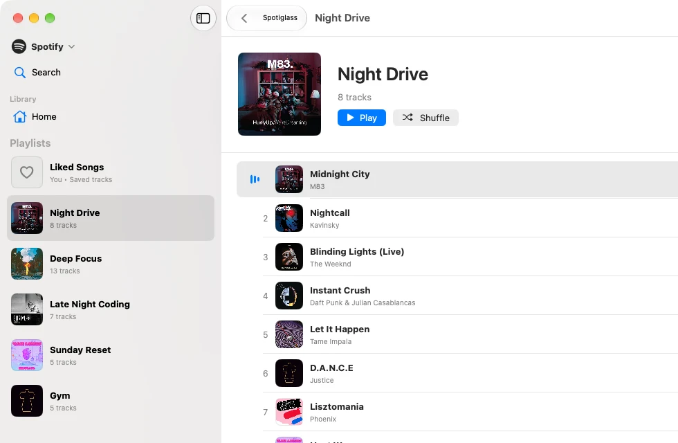
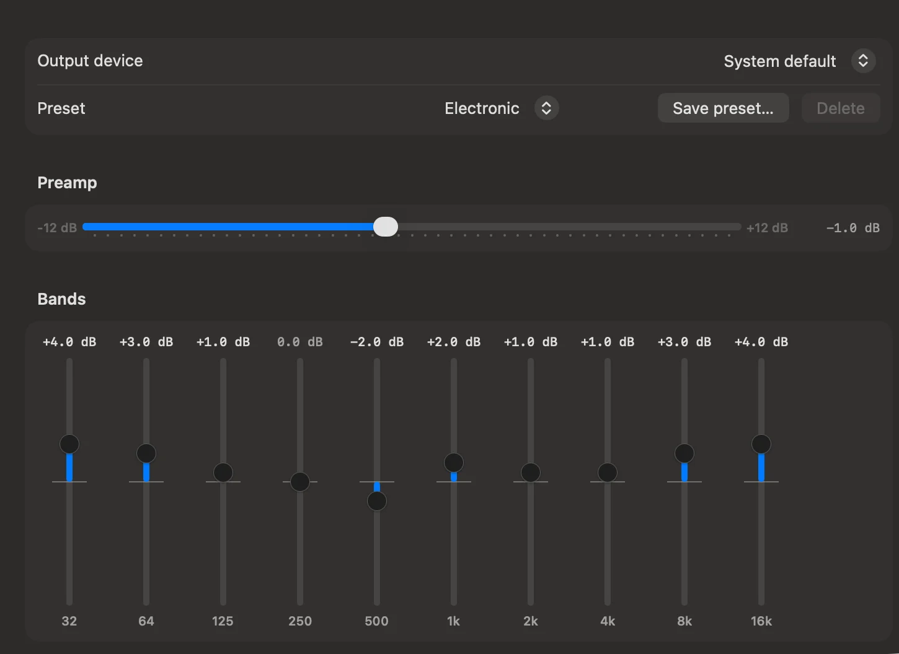

A keyboard‑first
music app for Mac
Spotiglass plays your music in a native Mac window. Find anything with ⌘K, shape the sound with a real 10-band equalizer and pin what you play most.
Works with Spotify Premium and Apple Music

Search everything with ⌘K
Playlists, artists, albums, tracks and commands in one list. ↩ plays the result, ⇧↩ queues it and ⌘↩ pins it to the sidebar.

Spotify and Apple Music side by side
- Switch in one click. The service sits at the top left of the sidebar. ⌃1 opens Apple Music and ⌃2 Spotify.
- Pin what you play. Drag playlists, artists, albums or single tracks into the sidebar. Each service keeps its own pins.
- Work on many tracks. Shift-click a range, then queue, like or add them to a playlist in one go.

A real 10-band equalizer
It runs as a system audio plug-in, so it changes what you hear from Spotify and from Apple Music, live while a song plays.

- Ten bands from 32 Hz to 16 kHz, plus a preamp.
- Presets to start from, and your own saved ones.
- One approval in macOS installs it. No Terminal.
Made for the Mac
- Native SwiftUI
- A real Mac app, not a website in a window.
- Light and dark
- Follows the system or stays light or dark, and respects reduced transparency and motion.
- Synced lyrics
- Lines follow the song. Tap one to jump there.
- Three languages
- English, Español and Deutsch. Switching keeps the music playing.
- No Spotiglass server
- Your Mac talks to Spotify and Apple directly. Sign-ins stay in the Keychain.
- Updates itself
- New versions arrive inside the app. You never download by hand again.
Keyboard shortcuts
These are the defaults. Change any of them in Settings › Keyboard.
Find
- Command palette
- ⌘K
- Search
- ⌘F
- Refresh playlists
- ⌘R
- Settings
- ⌘,
Play
- Play or pause
- Space
- Next track
- ⇧⌘→
- Previous track
- ⇧⌘←
- Queue
- ⌥⌘Q
- Lyrics
- ⌥⌘L
Services and pins
- Apple Music
- ⌃1
- Spotify
- ⌃2
- Pin the result
- ⌘↩
- Queue the result
- ⇧↩